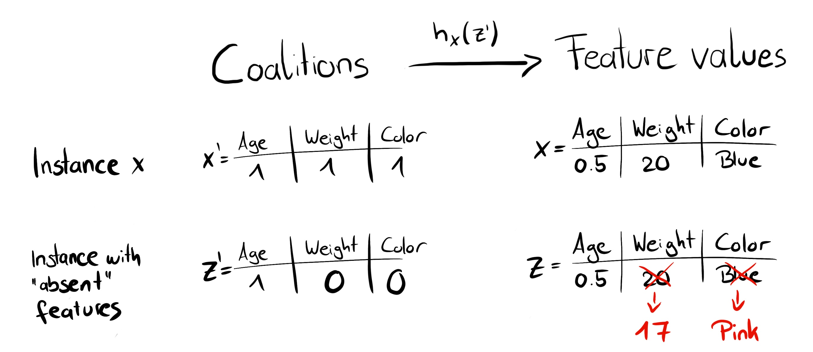
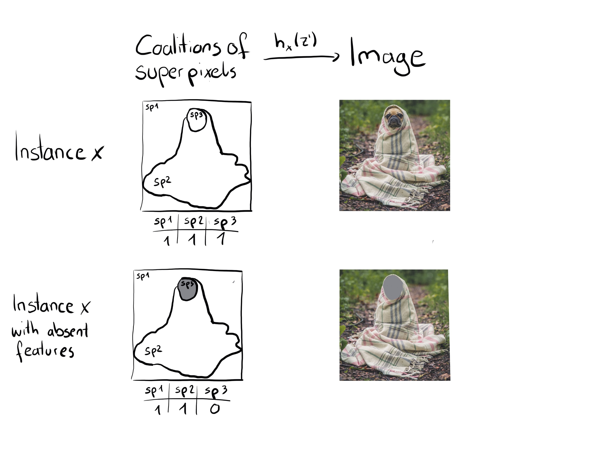
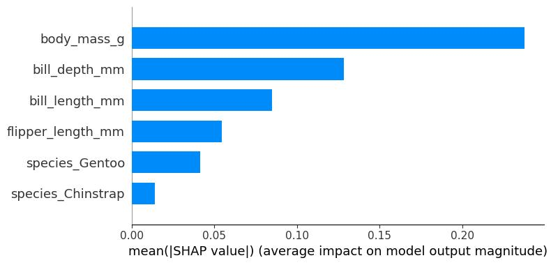
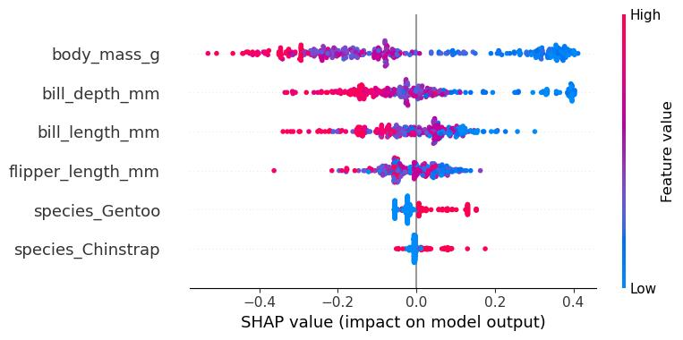
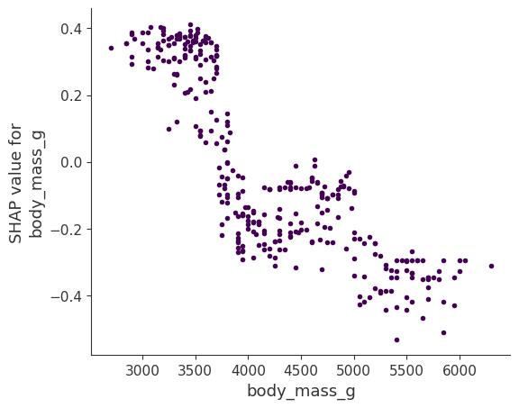
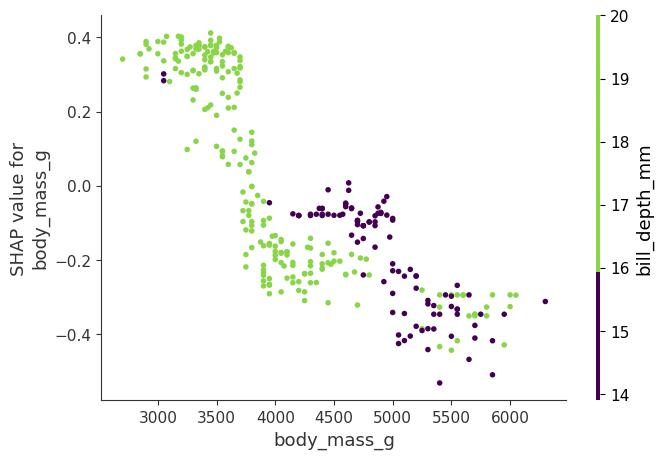
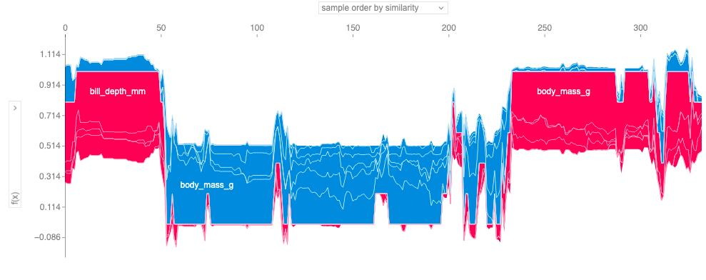

SHAP
Lundberg ve Lee (2017) tarafından geliştirilen SHAP (SHapley Additive exPlanations), bireysel tahminleri açıklamak için kullanılan bir yöntemdir. SHAP, oyun teorisi açısından optimal olan Shapley değerlerine dayanır. Öncelikle Shapley değerleri bölümünü okumanızı tavsiye ederim.
SHAP'in neden sadece Shapley değerleri bölümünün bir uzantısı olmadığını ve kendi başına önemli bir konu olduğunu anlamak için biraz tarihçe: 1953 yılında Lloyd Shapley, oyun teorisi için Shapley değerleri kavramını tanıttı. Makine öğrenmesi tahminlerini açıklamak için Shapley değerleri ilk kez Štrumbelj ve Kononenko (2011) ile Štrumbelj ve Kononenko (2014) tarafından önerildi. Ancak bu yaklaşım o dönem pek popüler olmadı. Nihayetinde birkaç yıl sonra Lundberg ve Lee (2017), makine öğrenmesi tahminlerini yorumlamak amacıyla Shapley değerlerini tahmin etmede temel olarak yeni bir yol sunan SHAP'i önerdi. Bu çalışma, Shapley değerlerini LIME ve diğer post-hoc (model sonrası) öznitelik atama yöntemleriyle bağlayan bir teori ve Shapley değerlerine dair ilave teorik katkılar içeriyordu.
SHAP'in yalnızca Shapley değerlerinin yeniden markalanmış bir hali olduğunu söyleyebilirsiniz (ki bu doğrudur); ancak bu durum, SHAP'in Shapley değerlerinin popülaritesinde ve kullanımında büyük bir dönüşümü tetiklediğini, bu değerleri hesaplamak ve yeni yollarla bir araya getirmek için yeni yöntemler sunduğunu görmezden gelmek olur. Ayrıca SHAP, Shapley değerlerini metin ve görüntü modellerine de taşımıştır.
Bu bölüm tamamen Shapley değeri bölümünün bir alt bölümü olabilecekken, onu makine öğrenmesi modellerini yorumlamaya yönelik "Shapley değerleri 2.0" olarak da görebilirsiniz. Bu bölüm, Shapley değerlerini tahmin etmenin yeni yollarını ve yeni grafik türlerini vurgulamaktadır. Ancak önce biraz teori.
SHAP Teorisi
SHAP'in amacı, her bir özniteliğin tahmine olan katkısını hesaplayarak bir \(x\) gözleminin tahminini açıklamaktır. SHAP, tıpkı Shapley değeri bölümünde tartıştığımız gibi, koalisyonel oyun teorisinden Shapley değerlerini hesaplar. Bir veri gözleminin öznitelik değerleri, bir koalisyondaki oyuncular gibi davranır. Shapley değerleri, "kazancın" (= tahminin) öznitelikler arasında adil bir şekilde nasıl dağıtılacağını söyler. Bir oyuncu, örneğin tablosal veriler için bireysel bir öznitelik değeri olabilir. Bir oyuncu aynı zamanda bir öznitelik değerleri grubu da olabilir. Örneğin bir görseli açıklamak için pikseller süper pikseller halinde gruplanabilir ve tahmin bunlar arasında dağıtılabilir. SHAP'in sunduğu yeniliklerden biri, Shapley değeri açıklamasının toplanabilir bir öznitelik atama yöntemi (toplanabilir bir lineer model) olarak temsil edilmesidir. Bu bakış açısı LIME ile Shapley değerlerini birbirine bağlar. SHAP açıklamayı şu şekilde tanımlar:
\(g(z') = \phi_{0} + \sum_{j = 1}^{M}\phi_{j}z'_{j}\)
burada \(g\) açıklama modelini, \(z' = (z_{1}',\ldots,z_{M}')^{T} \in \{ 0,1\}^{M}\) koalisyon vektörünü, \(M\) maksimum koalisyon boyutunu ve \(\phi_{j} \in R\) ise \(j\) özniteliği için öznitelik atamasını (Shapley değerlerini) temsil eder. Benim "koalisyon vektörü" olarak adlandırdığım şey, SHAP makalesinde "basitleştirilmiş öznitelikler" (simplified features) olarak adlandırılır. Sanırım bu isim tercih edildi çünkü örneğin görüntü verilerinde görüntüler piksel düzeyinde temsil edilmez, süper pikseller halinde birleştirilir. \(z'\) vektörünü koalisyonları tanımlayan bir yapı olarak düşünmek faydalıdır: Koalisyon vektöründe 1 değeri karşılık gelen öznitelik değerinin "mevcut" (var) olduğunu, 0 değeri ise "eksik" (yok) olduğunu gösterir. Ancak yine de buradaki bir öznitelik, pikseller yerine süper pikseller gibi modelin kullandığı özniteliklerden farklı olabilir. Önemli olan bu iki temsil arasında dönüşüm yapabilmemizdir. Shapley değerlerini hesaplamak için, yalnızca bazı öznitelik değerlerinin oynadığını ("var olduğunu") ve bazılarının oynamadığını ("yok olduğunu") simüle ederiz. Koalisyonların lineer bir model olarak temsil edilmesi, \(\phi_{j}\)'lerin hesaplanması için bir yöntemdir. Açıklanmak istenen \(x\) gözlemi için, koalisyon vektörü \(x'\) tamamen 1'lerden oluşan bir vektördür; yani tüm öznitelik değerleri "mevcut" durumdadır. Formül şu şekilde sadeleşir:
\(g(x') = \phi_{0} + \sum_{j = 1}^{M}\phi_{j}\)
Bu formülü benzer bir gösterimle Shapley değeri bölümünde de bulabilirsiniz.
Gerçek tahminleme süreçleri hakkında daha fazla ayrıntı bu bölümün ilerleyen kısımlarında yer almaktadır.
Hesaplama ayrıntılarına girmeden önce \(\phi\)'lerin özelliklerinden bahsedelim.
Shapley değerleri; Etkinlik (Efficiency), Simetri (Symmetry), Kukla (Dummy) ve Toplanabilirlik (Additivity) özelliklerini sağlayan tek çözümdür.
SHAP da Shapley değerlerini hesapladığı için bu özellikleri sağlar.
Lundberg ve Lee (2017) tarafından yazılan SHAP makalesinde, SHAP özellikleri ile standart Shapley özellikleri arasında bazı isim farkları göreceksiniz.
SHAP şu üç arzu edilen özelliği tanımlar:
1) Yerel Doğruluk (Local accuracy)
\(\widehat{f}(x) = g(x') = \phi_{0} + \sum_{j = 1}^{M}\phi_{j}x'_{j}\)
Eğer \(\phi_{0} = E\lbrack\widehat{f}(X)\rbrack\) olarak tanımlar ve tüm \(x_{j}'\) değerlerini 1 yaparsanız, bu Shapley etkinlik (efficiency) özelliğidir. Sadece farklı bir isimle ve koalisyon vektörü kullanılarak ifade edilmiştir.
\(\widehat{f}(x) = \phi_{0} + \sum_{j = 1}^{M}\phi_{j}x'_{j} = E\lbrack\widehat{f}(X)\rbrack + \sum_{j = 1}^{M}\phi_{j}\)
2) Eksiklik (Missingness)
\(x'_{j} = 0 \Rightarrow \phi_{j} = 0\)
Eksiklik özelliği, eksik olan bir özniteliğin sıfır katkı payı alacağını söyler. \(x_{j}'\) ifadesinin, 0 değerinin bir öznitelik değerinin yokluğunu temsil ettiği koalisyonlara atıfta bulunduğunu unutmayın. Koalisyon gösteriminde, açıklanacak gözlemin tüm \(x_{j}'\) öznitelik değerleri '1' olmalıdır. Bu özellik "normal" Shapley değerlerinin özellikleri arasında yer almaz. Peki SHAP için buna neden ihtiyaç duyarız? Lundberg bunu bir "küçük muhasebe kuralı" olarak adlandırır. Eksik bir öznitelik — teorik olarak — yerel doğruluk özelliğine zarar vermeden rastgele bir Shapley değerine sahip olabilir, çünkü \(x_{j}' = 0\) ile çarpılır. Eksiklik özelliği, eksik özniteliklerin 0 Shapley değeri almasını zorunlu kılar. Uygulamada bu yalnızca sabit olan öznitelikler için geçerlidir.
3) Tutarlılık (Consistency)
\({\widehat{f}}_{x}(z') = \widehat{f}(h_{x}(z'))\) olsun ve \(z_{- j}'\) ifadesi \(z_{j}' = 0\) durumunu göstersin.
Aşağıdaki koşulu sağlayan herhangi iki \(\widehat{f}\) ve \(\widehat{f}'\) modeli için:
\(\widehat{f}'_{x}(z') - \widehat{f}'_{x}(z'_{- j}) \geq {\widehat{f}}_{x}(z') - {\widehat{f}}_{x}(z'_{- j})\)
tüm \(z' \in \{ 0,1\}^{M}\) girdilerinde,daha sonra:
\(\phi_{j}(\widehat{f}',x) \geq \phi_{j}(\widehat{f},x)\)
olur.
\(\phi_{j}(\widehat{f},x)\) gösterimi, Shapley değerlerinin hangi modele ve veri noktasına bağlı olduğunu vurgular. Tutarlılık özelliği, eğer bir model bir öznitelik değerinin marjinal katkısı artacak veya aynı kalacak şekilde değişirse (diğer özniteliklerden bağımsız olarak), Shapley değerinin de artacağını veya aynı kalacağını söyler. Lundberg ve Lee (2017) makalesinin Ek Belgeler (Supplemental) kısmında açıklandığı gibi Doğrusallık (Linearity), Kukla (Dummy) ve Simetri (Symmetry) Shapley özellikleri Tutarlılık ilkelerinden türetilir.
SHAP Tahmini (Estimation)
Bu bölüm, tahminleri açıklamak amacıyla Shapley değerlerini hesaplamaya yönelik üç yöntemi incelemektedir: KernelSHAP, Permütasyon Yöntemi ve TreeSHAP.
KernelSHAP
KernelSHAP ile ilgili durum biraz kafa karıştırıcıdır: SHAP'in arkasındaki ana motivasyonu oluşturmuş, onu LIME ve diğer katkı payı yöntemleriyle bağlamış ve orijinal Lundberg ve Lee (2017) makalesinde tanıtılmıştır.
Ayrıca SHAP hakkındaki birçok blog yazısı KernelSHAP'ten bahseder.
Ancak KernelSHAP, TreeSHAP ve Permütasyon Yöntemine kıyasla yavaştır ve bu nedenle shap Python paketi artık onu varsayılan olarak kullanmamaktadır.
Artık varsayılan olmasa bile KernelSHAP, Shapley değerlerini anlamaya yardımcı olur ve Shapley değerleri ile LIME arasındaki bağı gösterir; bazı uygulamalar halen bunu kullanmaktadır.
KernelSHAP tahmini beş adımdan oluşur:
Koalisyon vektörlerini örnekleyin: \(z_{k}' \in \{ 0,1\}^{M},k \in \{ 1,\ldots,K\}\) (1 = öznitelik koalisyonda var, 0 = öznitelik yok).
Her bir \(z_{k}'\) için önce \(z_{k}'\) vektörünü orijinal öznitelik alanına dönüştürerek ve ardından \(\widehat{f}\) modelini uygulayarak tahmini elde edin: \(\widehat{f}(h_{x}(z_{k}'))\).
SHAP çekirdeği (kernel) ile her bir \(z_{k}'\) koalisyonu için ağırlığı hesaplayın.
Ağırlıklı lineer modeli kurun (fit).
Lineer modelin katsayıları olan Shapley değerlerini (\(\phi_{k}\)) döndürün.
0 ve 1 dizisi elde edene kadar ardışık yazı-tura atışlarıyla rastgele bir koalisyon oluşturabiliriz.
Örneğin \((1,0,1,0)^{T}\) vektörü, birinci ve üçüncü özniteliklerden oluşan bir koalisyona sahip olduğumuz anlamına gelir.
Örneklenen \(K\) sayıdaki koalisyon, regresyon modeli için veri seti haline gelir.
Regresyon modelinin hedef değişkeni, bir koalisyona ait tahmindir.
("Bir dakika!" diyebilirsiniz.
"Model bu ikili koalisyon verileri üzerinde eğitilmedi ve bunlar için tahmin yapamaz.")
Öznitelik değerlerinin koalisyonlarından geçerli veri gözlemlerine ulaşmak için \(h_{x}(z') = z\) şeklinde bir fonksiyona ihtiyacımız vardır; burada $h_\mathbf{x}: \{0,1\}^M\rightarrow\mathbb{R}^p$ şeklindedir.
\(h_{x}\) fonksiyonu, 1 değerlerini açıklamak istediğimiz \(x\) gözlemindeki karşılık gelen değerle eşleştirir.
Tablosal veriler için 0 değerlerini, veriden örneklediğimiz başka bir gözlemin değerleriyle eşleştirir.
Bu, "öznitelik değeri yok" ifadesini "öznitelik değeri veriden alınan rastgele bir öznitelik değeriyle değiştirildi" şeklinde ele aldığımız anlamına gelir.
Tablosal veriler için @fig-shap-simplified-feature, koalisyonlardan öznitelik değerlerine yapılan eşlemeyi görselleştirmektedir.

Tablosal veriler için \(h_{x}\), \(X_{j}\) özniteliği ile \(X_{- j}\) (diğer öznitelikler) özniteliklerini bağımsız olarak ele alır ve marjinal dağılım üzerinden entegre eder:
\(\widehat{f}(h_{x}(z')) = E_{X_{- j}}\lbrack\widehat{f}(x_{j},X_{- j})\rbrack\)
Marjinal dağılımdan örnekleme yapmak, mevcut ve eksik öznitelikler arasındaki bağımlılık yapısını göz ardı etmek anlamına gelir.
Bu nedenle KernelSHAP, permütasyona dayalı tüm yorumlama yöntemleriyle aynı sorundan muzdariptir.
Tahminleme süreci, düşük olasılıklı gözlemlere ağırlık verme potansiyeline sahiptir.
Sonuçlar güvenilmez hale gelebilir.
Koşullu dağılımdan örnekleme yapsaydık, değer fonksiyonu değişirdi ve dolayısıyla çözümü Shapley değerleri olan oyun da değişirdi.
Sonuç olarak, Shapley değerleri farklı bir yoruma sahip olurdu: Örneğin, model tarafından hiç kullanılmamış olabilecek bir öznitelik, koşullu örnekleme kullanıldığında sıfırdan farklı bir Shapley değerine sahip olabilir.
Marjinal oyun için bu öznitelik değeri her zaman 0 Shapley değeri alırdı, aksi takdirde Kukla (Dummy) aksiyomunu ihlal ederdi. SHAP'in bu koşullu örnekleme versiyonu mevcuttur ve Aas ve arkadaşları (2021) tarafından önerilmiştir.
Koşullu Shapley değerleri, kullanılmayan özniteliklere sıfırdan farklı Shapley değerleri verebilir
Koşullu beklentiyle ilgili sorun, \(\widehat{f}\) tahmin fonksiyonu üzerinde hiçbir etkisi olmayan özniteliklerin, Sundararajan ve Najmi (2020) ile Janzing ve arkadaşları (2020) tarafından gösterildiği gibi, TreeSHAP tahmininde sıfırdan farklı bir değer alabilmesidir.
Sıfırdan farklı bu tahmin, özniteliğin tahmin üzerinde gerçekten etkisi olan başka bir öznitelikle korelasyonu olduğunda gerçekleşebilir.

SHAP ile LIME arasındaki en büyük fark, regresyon modelindeki gözlemlerin ağırlıklandırılmasıdır. LIME, gözlemleri orijinal gözleme ne kadar yakın olduklarına göre ağırlıklandırır. Koalisyon vektöründe ne kadar çok 0 varsa LIME'daki ağırlık o kadar küçük olur. SHAP, örneklenen gözlemleri, koalisyonun Shapley değeri tahmininde alacağı ağırlığa göre ağırlıklandırır. Küçük koalisyonlar (az sayıda 1 içeren) ve büyük koalisyonlar (yani çok sayıda 1 içeren) en büyük ağırlıkları alır. Arkasındaki sezgisel mantık şudur: Özniteliklerin etkilerini tek başlarına inceleyebilirsek, bireysel öznitelikler hakkında en çok bilgiyi ediniriz. Bir koalisyon tek bir öznitelikten oluşuyorsa, bu özniteliğin tahmin üzerindeki izole edilmiş ana etkisini öğrenebiliriz. Bir koalisyon biri hariç tüm özniteliklerden oluşuyorsa, bu özniteliğin toplam etkisini (ana etki artı öznitelik etkileşimleri) öğrenebiliriz. Eğer bir koalisyon özniteliklerin yarısından oluşuyorsa, özniteliklerin yarısını içeren çok sayıda olası koalisyon olduğu için, bireysel bir özniteliğin katkısı hakkında pek az şey öğreniriz. Shapley uyumlu ağırlıklandırmayı elde etmek için Lundberg ve Lee (2017) SHAP çekirdeğini (kernel) önermiştir:
\(\pi_{x}(z') = \frac{M - 1}{\frac{M}{|z'|}|z'|(M - |z'|)}\)
$$
Burada \(M\) maksimum koalisyon boyutunu, \(z'\) gözlemindeki mevcut özniteliklerin sayısını gösterir.
Lundberg ve Lee (2017), bu çekirdek ağırlığıyla yapılan lineer regresyonun Shapley değerlerini verdiğini göstermektedir.
LIME ile koalisyon verileri üzerinde SHAP çekirdeğini kullanacak olsaydınız, LIME da Shapley değerlerini tahmin ederdi!
Koalisyonların örneklenmesi konusunda biraz daha zekice davranabiliriz: En küçük ve en büyük koalisyonlar ağırlığın çoğunu kapsar.
Körlemesine örnekleme yapmak yerine, bu yüksek ağırlıklı koalisyonları dahil etmek için \(K\) örnekleme bütçesinin bir kısmını kullanarak daha iyi Shapley değeri tahminleri elde ederiz.
İşe 1 ve \(M - 1\) özniteliğe sahip tüm olası koalisyonlarla başlarız; bu da toplamda \(2M\) koalisyon yapar.
Yeterince bütçemiz kaldığında (mevcut bütçe \(K - 2M\)), 2 öznitelikli ve \(M - 2\) öznitelikli koalisyonları vb. dahil edebiliriz.
Kalan koalisyon boyutlarından ise yeniden ayarlanmış ağırlıklarla örneklem yaparız.
Elimizde veri, hedef değişken ve ağırlıklar var; Ağırlıklı lineer regresyon modelimizi kurmak için ihtiyacımız olan her şeye sahibiz:
\(g(z') = \phi_{0} + \sum_{j = 1}^{M}\phi_{j}z'_{j}\)
Lineer \(g\) modelini aşağıdaki kayıp fonksiyonunu (\(L\)) minimize ederek eğitiriz:
\(L(\widehat{f},g,\pi_{x}) = \sum_{z' \in Z}^{}\lbrack\widehat{f}(h_{x}(z')) - g(z')\rbrack^{2}\pi_{x}(z')\)
burada \(Z\) eğitim verisidir.
Bu, lineer modeller için genellikle optimize ettiğimiz o bildiğimiz klasik karesel hatalar toplamıdır.
Modelin tahmin edilen katsayıları olan \(\phi_{j}\)'ler Shapley değerleridir.
Lineer regresyon ortamında olduğumuz için standart regresyon araçlarından da yararlanabiliriz.
Örneğin, modeli seyrek (sparse) hale getirmek için düzenlileştirme (regularization) terimleri ekleyebiliriz.
Kayıp \(L\)'ye bir L1 cezası eklersek, seyrek açıklamalar oluşturabiliriz.
(Yine de elde edilen katsayıların halen geçerli Shapley değerleri olup olmayacağından pek emin değilim.)
AĞAÇ ŞEKLİ
Lundberg ve arkadaşları (2019), karar ağaçları, rastgele ormanlar (random forests) ve gradyan artırma ağaçları (gradient-boosted trees) gibi ağaç tabanlı makine öğrenmesi modelleri için SHAP'in bir varyantı olan TreeSHAP'i önermiştir. TreeSHAP, KernelSHAP'e hızlı ve modele özgü bir alternatif olarak sunulmuştur. TreeSHAP ne kadar daha hızlıdır? Kesin KernelSHAP ile karşılaştırıldığında, hesaplama karmaşıklığını \(O(TL2^{M})\) değerinden \(O(TLD^{2})\) değerine düşürür; burada T ağaç sayısını, L herhangi bir ağaçtaki maksimum yaprak sayısını ve D herhangi bir ağaçtaki maksimum derinliği temsil eder.
TreeSHAP iki versiyonla gelir:
"Interventional" (Müdahaleli) klasik Shapley değerlerini hesaplar.
"Tree-path dependent" (Ağaç yoluna bağımlı) koşullu SHAP değerlerine benzer bir şey hesaplar.
Python paketindeki orijinal uygulama eskiden shap ağaç yoluna bağımlı versiyondu, ancak şimdi müdahaleli (interventional) olanıdır.
Hem müdahaleli hem de ağaç yoluna bağımlı tahmin yöntemleri oldukça karmaşıktır, bu yüzden sadece genel fikri vereceğim (okunuşu: tam versiyonu ben de tam olarak kavrayamadım). Esas itibarıyla TreeSHAP, Shapley değerlerini daha verimli hesaplamak için ağaç yapısından yararlanır.
Müdahaleli (Interventional) TreeSHAP alışılagelmiş SHAP değerlerini hesaplar.
Aşağıdaki açıklama, tek bir ağaç için, açıklanacak bir \(x\) veri noktası için ve basitlik açısından yalnızca tek bir \(z\) veri noktası içeren arka plan veri seti için Shapley değerlerinin tahmin edilmesini anlatmaktadır:
Bildiğimiz gibi Shapley değeri; mevcut oyuncuları (\(x\)'ten gelen öznitelik değerleri) ve eksik oyuncuları (\(z\)'den gelen öznitelik değerleri) içeren koalisyonların tekrar tekrar oluşturulmasıyla hesaplanır.
Ancak bu koalisyonların birçoğu için \(x\)'ten bir öznitelik eklemek tahmini değiştirmez, çünkü bir karar ağacı karar yapısı nedeniyle yalnızca sınırlı sayıda farklı tahmine sahiptir.
Örneğin, 5 derinliğindeki ikili bir ağaç maksimum 32 olası tahmine sahiptir.
Bu nedenle tüm koalisyonları tek tek gezmek yerine, Müdahaleli TreeSHAP tahmincisi yalnızca tahminleri gerçekten değiştirecek koalisyonlarla çalışmak üzere ağaç yollarını keşfeder.
Zor olan kısım, bu marjinal katkıları doğru bir şekilde ağırlıklandırmak ve birleştirmektir; bu da müdahaleli TreeSHAP algoritmasının anlaşılmasını daha zor hale getirir.
Ve elbette lanet özyineleme (recursion). Bir ağaç topluluğunun (örneğin bir rastgele ormanın) Shapley değerlerini elde etmek için, topluluk tahminlerinin birleştirildiği şekilde Shapley değerlerini birleştirmeniz yeterlidir. Rastgele orman durumunda bu, değerlerin ortalamasını almak olacaktır.
Yola bağımlı (Path-dependent) TreeSHAP, ağaç yapısından yararlanarak benzer bir şekilde çalışır. Temel fikir, S koalisyonunun tüm alt kümelerini aynı anda ağaçta aşağı doğru itmektir. Ve her ayrımda (split), alt kümeler için gözlem sayısını takip ederiz.
Permütasyon Yöntemi (Permutation Method)
Modelden bağımsız en verimli tahminci Permütasyon Yöntemidir.
Fikir, özniteliklerin permütasyonlarını oluşturarak koalisyonlardan zekice örnekleme yapmaktır.
Dört öznitelik değerine sahip bir örneğe bakalım (Interpreting Machine Learning Models with SHAP kitabından alınmıştır): \(x_{park},x_{cat},x_{area}\) ve \(x_{floor}\).
Sadeleştirmek adına \(x_{park}^{(i)}\) ifadesini \(x_{park}\) olarak kısaltacağım.
Bu özniteliklerin rastgele bir permütasyonu şöyle olurdu:
\((x_{cat},x_{area},x_{park},x_{floor})\)
Bu permütasyona dayanarak, soldan sağa doğru koalisyonlar oluşturmaya başlayarak marjinal katkıları hesaplayabiliriz:
xcat özniteliğini ∅ kümesine ekle
\(x_{area}\) özniteliğini \(\{ x_{cat}\}\) kümesine ekle
\(x_{park}\) özniteliğini \(\{ x_{cat},x_{area}\}\) kümesine ekle
\(x_{floor}\) özniteliğini \(\{ x_{cat},x_{area},x_{park}\}\) kümesine ekle
Ve aynısını geriye doğru da yapabiliriz:
\(x_{floor}\) özniteliğini ∅ kümesine ekle
\(x_{park}\) özniteliğini \(\{ x_{floor}\}\) kümesine ekle
\(x_{area}\) özniteliğini \(\{ x_{park},x_{floor}\}\) kümesine ekle
\(x_{cat}\) özniteliğini \(\{ x_{area},x_{park},x_{floor}\}\) kümesine ekle
Permütasyon her seferinde tek bir özniteliği değiştirir. Bu durum model çağrılarının sayısını azaltır, çünkü bir marjinal katkının ikinci terimi (bir model tahmini), bir sonraki marjinal katkıyı hesaplamak için de gereklidir. Örneğin \(\{ x_{cat},x_{area}\}\) koalisyonu, hem \(x_{park}\)'ın \(\{ x_{cat},x_{area}\}\)'ya olan marjinal katkısını hem de \(x_{area}\)'nın \(\{ x_{cat}\}\)'ya olan marjinal katkısını hesaplamak için kullanılır. Her ileri ve geri permütasyon bize öznitelik başına iki marjinal katkı verir. Bu şekilde birkaç permütasyon yaparak Shapley değerlerinin oldukça iyi bir tahminini elde ederiz. Shapley değerlerini gerçekten hesaplamak için, Shapley değerlerini koalisyonlar yerine permütasyonlar cinsinden tanımlamamız gerekir: Özniteliklerin olası \(p!\) sayıda permütasyonu ve k-ncı permütasyon olan \(o(k)\) varsa, bu durumda \(j\) özniteliği için Shapley değeri şöyle hesaplanabilir:
\({\widehat{\phi}}_{j}^{(i)} = \frac{1}{m}\sum_{k = 1}^{m}{\widehat{\Delta}}_{o(k),j}\)
Buradaki \({\widehat{\Delta}}_{o(k),j}\) terimi \(k\)-ncı marjinal katkıdır. Bu, Shapley değerini tüm katkıların basit bir ortalaması olarak hesaplayabileceğimiz anlamına gelir. Ancak permütasyon tahmininin temel motivasyonu, tüm olası koalisyonları veya permütasyonları hesaplamaktan kaçınmaktı. Güzel haber şu ki, permütasyonları örnekleyebilir ve yine de ortalamasını alabiliriz. İleri ve geri yinelemeler gerçekleştirdiğimiz için Shapley değerini şu şekilde hesaplarız:
\({\widehat{\phi}}_{j}^{(i)} = \frac{1}{2m}\sum_{k = 1}^{m}({\widehat{\Delta}}_{o(k),j} + {\widehat{\Delta}}_{- o(k),j})\)
\(- o(k)\) permütasyonu, permütasyonun tersine çevrilmiş halidir. Antitetik örnekleme (antithetic sampling) olarak da bilinen ileri ve geri yinelemeli permütasyon prosedürü, diğer SHAP değeri örnekleme tahmincilerine kıyasla oldukça iyi performans gösterir (Mitchell ve arkadaşları, 2022). Permütasyon yöntemi ek olarak etkinlik (efficiency) aksiyomunun her zaman sağlanmasını garanti eder; yani SHAP değerlerini topladığınızda, bu toplam tahmin eksi ortalama tahmine eşit olur. Kaç permütasyona ihtiyacınız olabileceğine dair genel bir fikir vermek gerekirse: shap paketi varsayılan olarak 10 değerini kullanır.
Örnek
Penguen cinsiyetini tahmin etmek için 100 ağaçlı bir rastgele orman (random forest) sınıflandırıcısı eğittim. Bireysel tahminleri açıklamak için SHAP kullanacağız. Rastgele orman bir ağaç topluluğu olduğundan, daha yavaş olan KernelSHAP yöntemi yerine hızlı olan Müdahaleli (Interventional) TreeSHAP tahmin yöntemini kullanabiliriz. Ancak bu örnek koşullu dağılıma dayanmak yerine marjinal dağılımı kullanmaktadır. Bu durum pakette açıklanmıştır ancak orijinal makalede yer almaz. Python TreeSHAP fonksiyonu marjinal dağılımla daha yavaştır, ancak verideki satır sayısı ile lineer olarak ölçeklendiğinden KernelSHAP'ten yine de daha hızlıdır.
Burada marjinal dağılımı kullandığımız için yapılan yorumlama Shapley değeri bölümündeki ile aynıdır. Ancak Python shap paketi farklı bir görselleştirme ile gelir: Shapley değerleri gibi öznitelik katkılarını "kuvvetler (forces)" olarak görselleştirebilirsiniz. Her bir öznitelik değeri, tahmini artıran ya da azaltan bir kuvvettir. Tahmin temel çizgiden (baseline) başlar. Shapley değerleri için temel çizgi, tüm tahminlerin ortalamasıdır. Grafikte her bir Shapley değeri, tahmini artırmak (pozitif değer) veya azaltmak (negatif değer) için iten bir oktur. Bu kuvvetler, veri gözleminin gerçek tahmininde birbirini dengeler.
Palmer penguenleri veri setindeki iki penguen için SHAP açıklama kuvvet grafiklerini (force plots) göstermektedir: Birinci penguenin, küçük gaga uzunluğu nedeniyle Adelie pengueni olma olasılığı yüksektir. İkinci penguenin ise büyük gaga uzunluğu ve yüzgeç uzunluğu nedeniyle Adelie olma olasılığı düşüktür.

İki penguen için SHAP değerleri. Temel değer – ortalama tahmin edilen olasılık – 0,47'dir. Her özellik, tahmini temel değerden yukarı veya aşağı doğru iten bir kuvvet olarak görülebilir.
SHAP Toplulaştırma Grafikleri
Önceki bölüm bireysel tahminler için yapılan açıklamaları gösteriyordu.
Shapley değerleri küresel açıklamalara dönüştürülebilir. Her bir gözlem için SHAP çalıştırırsak, bir Shapley değerleri matrisi elde ederiz. Bu matris veri gözlemi başına bir satıra ve öznitelik başına bir sütuna sahiptir. Bu matristeki Shapley değerlerini analiz ederek tüm modeli yorumlayabiliriz.
SHAP öznitelik önemi ile başlıyoruz.
SHAP Öznitelik Önemi (Feature Importance)
SHAP öznitelik öneminin arkasındaki fikir basittir: Büyük mutlak Shapley değerlerine sahip öznitelikler önemlidir. Küresel önemi istediğimiz için, veri genelinde öznitelik başına mutlak Shapley değerlerinin ortalamasını alırız:
\(I_{j} = \frac{1}{n}\sum_{i = 1}^{n}\left| \phi_{j}^{(i)} \right|\)
Ardından öznitelikleri azalan öneme göre sıralar ve grafiklerini çizeriz. penguenleri sınıflandırmak için daha önce eğitilen rastgele orman modeli için SHAP öznitelik önemini göstermektedir. Vücut kütlesi en önemli öznitelikti ve Adelie için tahmin edilen olasılığı 25 yüzde puanı değiştirdi (x ekseninde 0.25).

Ortalama mutlak Shapley değerleri olarak ölçülen SHAP özelliği önemi.
SHAP öznitelik önemi, permütasyon öznitelik önemine bir alternatiftir. Her iki önem ölçütü arasında büyük bir fark vardır: Permütasyon öznitelik önemi, model performansındaki düşüşe dayanır. SHAP ise öznitelik katkılarının büyüklüğüne dayanır.
Öznitelik önemi grafiği kullanışlıdır ancak önem derecelerinin ötesinde hiçbir bilgi içermez. Daha bilgilendirici bir grafik için sırada özet grafiğe (summary plot) bakacağız.
SHAP Özet Grafiği (Summary Plot)
Özet grafik, öznitelik önemini öznitelik etkileriyle birleştirir. Özet grafikteki her nokta, bir öznitelik ve bir gözlem için bir Shapley değeridir. Y eksenindeki konum öznitelik tarafından, x eksenindeki konum ise Shapley değeri tarafından belirlenir. Renk, özniteliğin düşükten yükseğe değerini temsil eder. Üst üste binen noktalar y ekseni yönünde rastgele dağıtılır (jitter), böylece öznitelik başına Shapley değerlerinin dağılımı hakkında bir fikir ediniriz. Öznitelikler önemlerine göre sıralanır. Özet grafikte (?@fig-shap-summary-plot), bir özniteliğin değeri ile tahmin üzerindeki etkisi arasındaki ilişkinin ilk belirtilerini görürüz. Daha yüksek bir vücut kütlesi, P(dişi) olasılığına negatif katkıda bulunur. Özet grafik ayrıca vücut kütlesinin farklı penguenler için en geniş etki aralığına sahip olduğunu gösterir.

SHAP özet grafiği.
Ancak ilişkinin tam şeklini görmek için SHAP bağımlılık grafiklerine bakmamız gerekir.
SHAP Bağımlılık Grafiği (Dependence Plot)
SHAP öznitelik bağımlılığı belki de en basit küresel yorumlama grafiğidir:
Bir öznitelik seçin.
Her bir veri gözlemi için, x ekseninde öznitelik değeri ve y ekseninde karşılık gelen Shapley değeri olacak şekilde bir nokta çizin.
Tamamlandı.
Matematiksel olarak grafik şu noktaları içerir: \(\{(x_{j}^{(i)},\phi_{j}^{(i)})\}_{i = 1}^{n}\)
@fig-shap-dependence, vücut kütlesi için SHAP öznitelik bağımlılığını göstermektedir.
Penguen ne kadar ağırsa dişi olma olasılığı o kadar düşüktür.

Vücut kütlesi için SHAP bağımlılık grafiği. X ekseni özelliği, Y ekseni ise SHAP değerlerini göstermektedir. Her nokta bir veri noktasını temsil eder.
SHAP bağımlılık grafikleri, kısmi bağımlılık grafikleri (PDP) ve birikimli yerel etkiler (ALE) gibi küresel öznitelik etkisi yöntemlerine bir alternatiftir. PDP ve ALE grafikleri ortalama etkileri gösterirken, SHAP bağımlılığı y eksenindeki varyansı da gösterir. Özellikle etkileşimlerin olduğu durumlarda, SHAP bağımlılık grafiği y ekseninde çok daha dağılmış olacaktır. Bağımlılık grafiği, bu öznitelik etkileşimleri vurgulanarak geliştirilebilir.
SHAP Etkileşim Değerleri (Interaction Values)
Etkileşim etkisi, bireysel öznitelik etkileri hesaba katıldıktan sonraki ilave birleşik öznitelik etkisidir. Oyun teorisindeki Shapley etkileşim indeksi şu şekilde tanımlanır:
(φᵢ,ⱼ = ∑₍S ⊆ F∖₎ (|S|!(M − |S| − 2)!)/(2(M − 1)!) δᵢ,ⱼ(S))
\(i \neq j\) olduğunda ve \(\delta_{ij}(S) = {\widehat{f}}_{x}(S \cup \{ i,j\}) - {\widehat{f}}_{x}(S \cup \{ i\}) - {\widehat{f}}_{x}(S \cup \{ j\}) + {\widehat{f}}_{x}(S)\).
Bu formül, bireysel etkiler hesaba katıldıktan sonra saf etkileşim etkisini elde etmemiz için özniteliklerin ana etkisini çıkarır. Shapley değeri hesaplamasında olduğu gibi, değerlerin tüm olası öznitelik koalisyonları \(S\) üzerinden ortalamasını alırız. Tüm öznitelikler için SHAP etkileşim değerlerini hesapladığımızda, gözlem başına \(M \times M\) boyutlarında bir matris elde ederiz; burada \(M\) öznitelik sayısıdır. Etkileşim indeksini nasıl kullanabiliriz? Örneğin, @fig-shap-interaction grafiğinde olduğu gibi SHAP öznitelik bağımlılık grafiğini en güçlü etkileşime sahip öznitelikle otomatik olarak renklendirmek için. Burada vücut kütlesi, gaga derinliği ile etkileşime girmektedir.

Etkileşim görselleştirmeli SHAP özellik bağımlılık grafiği. Burada gaga uzunluğunun vücut kütlesiyle etkileşim halindeki bağımlılık grafiğini görüyoruz. Özellikle daha uzun gagalar için, gaga uzunluğunun P(Adelie)'ye katkısı vücut kütlesine bağlı olarak farklılık gösterir.
Etkileşimleri derinlemesine analiz edin
SHAP ve etkileşimler konusu çok daha derinlere gitmektedir. SHAP etkileşimlerinin daha gelişmiş analizine ihtiyaç duyuyorsanız, shapiq paketini incelemenizi öneririm (Muschalik ve arkadaşları, 2024).
Shapley Değerlerini Kümeleme (Clustering)
Shapley değerlerinin yardımıyla verilerinizi kümeleyebilirsiniz. Kümelemenin amacı benzer gözlem gruplarını bulmaktır. Normalde kümeleme özniteliklere dayanır. Öznitelikler genellikle farklı ölçeklerdedir. Örneğin, boy metre cinsinden, renk yoğunluğu 0 ile 100 arasında ve bir sensör çıktısı -1 ile 1 arasında ölçülebilir. Zorluk, bu tür farklı ve karşılaştırılamaz özniteliklere sahip gözlemler arasındaki uzaklıkları hesaplamaktır.
SHAP kümelemesi, her bir gözlemin Shapley değerlerini kümeleyerek çalışır. Bu, gözlemleri açıklama benzerliğine göre kümelediğiniz anlamına gelir. Tüm SHAP değerleri aynı birime sahiptir -- tahmin alanının birimi. Herhangi bir kümeleme yöntemini kullanabilirsiniz.
Gözlemleri sıralamak için hiyerarşik kümeleme yöntemini kullanır. Grafik, her biri bir gözlemin tahminini açıklayan birçok kuvvet grafiğinden (force plot) oluşur. Kuvvet grafiklerini dikey olarak döndürür ve kümeleme benzerliklerine göre yan yana yerleştiririz.

Açıklama benzerliğine göre kümelenmiş yığılmış SHAP açıklamaları. X eksenindeki her konum, verinin bir örneğini temsil eder. Kırmızı SHAP değerleri tahmini artırırken, mavi değerler azaltır.
Güçlü Yönleri
SHAP, Shapley değerlerini hesapladığı için Shapley değerlerinin tüm avantajları geçerlidir: SHAP, oyun teorisinde sağlam bir teorik temele sahiptir. Tahmin, öznitelik değerleri arasında adil bir şekilde dağıtılır. Tahmini ortalama tahminle karşılaştıran zıt açıklamalar (contrastive explanations) elde ederiz.
SHAP, LIME ve Shapley değerlerini birbirine bağlar. Bu, her iki yöntemi de daha iyi anlamak için çok kullanışlıdır. Ayrıca açıklanabilir makine öğrenmesi alanını birleştirmeye de yardımcı olur.
SHAP, ağaç tabanlı modeller için hızlı bir uygulamaya sahiptir. Bunun SHAP'in popülaritesinin anahtarı olduğuna inanıyorum, çünkü Shapley değerlerinin benimsenmesinin önündeki en büyük engel yavaş hesaplamadır.
Hızlı hesaplama, küresel model yorumlamaları için gerekli olan birçok Shapley değerini hesaplamayı mümkün kılar. Küresel yorumlama yöntemleri öznitelik önemini, öznitelik bağımlılığını, etkileşimleri, kümelemeyi ve özet grafikleri içerir. SHAP ile küresel yorumlamalar yerel açıklamalarla tutarlıdır, çünkü Shapley değerleri küresel yorumlamaların "atomik birimidir". Yerel açıklamalar için LIME ve küresel açıklamalar için kısmi bağımlılık grafikleri artı permütasyon öznitelik önemi kullanırsanız, ortak bir temelden yoksun kalırsınız.
Sınırlılıkları
KernelSHAP yavaştır. Bu durum, birçok gözlem için Shapley değerlerini hesaplamak istediğinizde KernelSHAP'i kullanışsız hale getirir. Ayrıca SHAP öznitelik önemi gibi tüm küresel SHAP yöntemleri çok sayıda gözlem için Shapley değerlerinin hesaplanmasını gerektirir.
KernelSHAP öznitelik bağımlılığını göz ardı eder. Permütasyona dayalı diğer çoğu yorumlama yöntemi de bu soruna sahiptir. Öznitelik değerlerini rastgele gözlemlerden alınan değerlerle değiştirerek marjinal dağılımdan rastgele örneklemek genellikle daha kolaydır. Ancak, öznitelikler bağımlıysa (örneğin korelasyonluysa), bu durum olası olmayan veri noktalarına çok fazla ağırlık verilmesine yol açar.
Yola bağımlı (Path-dependent) TreeSHAP sezgisel olmayan öznitelik katkıları üretebilir. TreeSHAP, olası olmayan veri noktalarına ekstrapolasyon yapma sorununu çözerken, bunu değer fonksiyonunu değiştirerek yapar ve bu nedenle oyunu hafifçe değiştirir. TreeSHAP değer fonksiyonunu koşullu beklenen tahmine dayanarak değiştirir. Değer fonksiyonundaki bu değişiklikle, tahmin üzerinde hiçbir etkisi olmayan öznitelikler sıfırdan farklı bir TreeSHAP değeri alabilir.
Shapley değerlerinin dezavantajları SHAP için de geçerlidir: Shapley değerleri yanlış yorumlanabilir.
SHAP ile kasıtlı olarak yanıltıcı açıklamalar oluşturmak mümkündür ve bu durum önyargıları gizleyebilir (Slack ve arkadaşları, 2020). Açıklamaları oluşturan veri bilimci sizseniz bu gerçek bir sorun değildir (yanıltıcı açıklamalar oluşturmak isteyen kötü niyetli bir veri bilimci iseniz bu bir avantaj bile olurdu). Bir SHAP açıklamasını alan kişiler için ise bu bir dezavantajdır: açıklamanın doğruluğundan emin olamazlar.
Yazılım
Lundberg, SHAP'i Python'daki shap paketinde uygulamıştır; bu paket şu anda çok daha büyük bir ekip tarafından sürdürülmektedir.
Bu uygulama, Python için scikit-learn makine öğrenmesi kütüphanesi ile eğitilmiş modeller için çalışır. shap paketi bu bölümdeki örnekler için de kullanılmıştır. SHAP, ağaç artırma (tree boosting) çatıları olan xgboost ve LightGBM kütüphanelerine entegre edilmiştir ve bunu daha genel bir yorumlanabilirlik kütüphanesi olan PiML içinde de bulabilirsiniz. R dilinde shapper ve fastshap paketleri mevcuttur. SHAP ayrıca R xgboost paketine de dahil edilmiştir. Özellikle SHAP etkileşimleri için Python shapiq paketi bulunmaktadır.